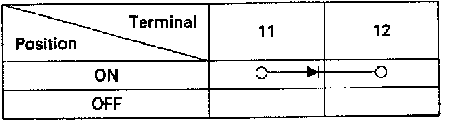
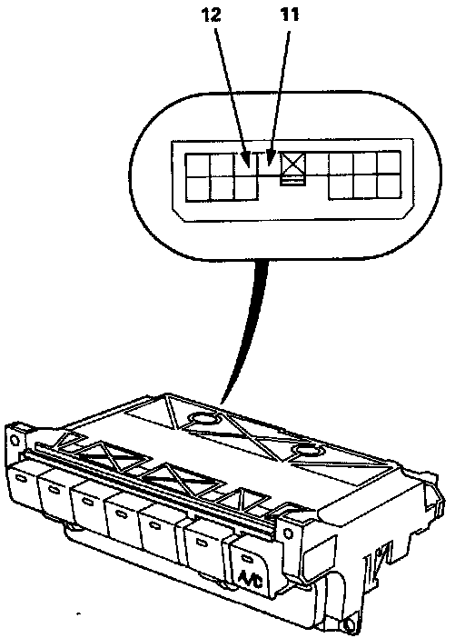

Air Conditioning Switch: Testing and Inspection
A/C Switch TestNOTE: The A/C switch contains a diode. Use an analog ohmmeter, or a digital ohmmeter equipped with a diode tester.


Check for current flow in both directions between terminals 11 and 12. There should be current flow in only one direction.